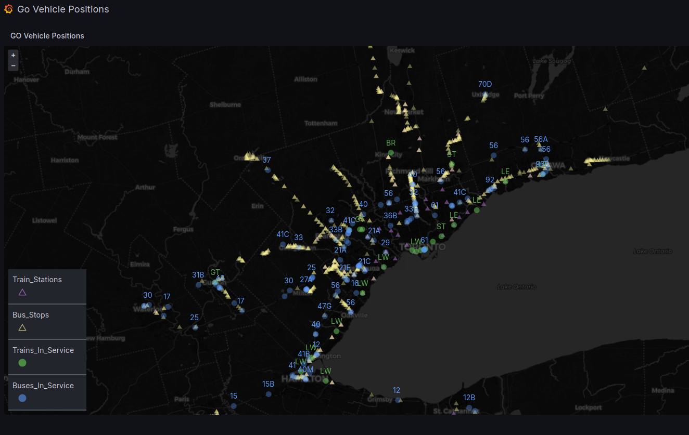

GO Transit Dashboard
Introduction Metrolinx miraculously approved my request for a key for their open API, so I thought it would be fun to build a live dashboard to track the positions of their vehicles across Ontario. Unfortunately, I shut down the dashboard because the amount of data…
Continue reading...